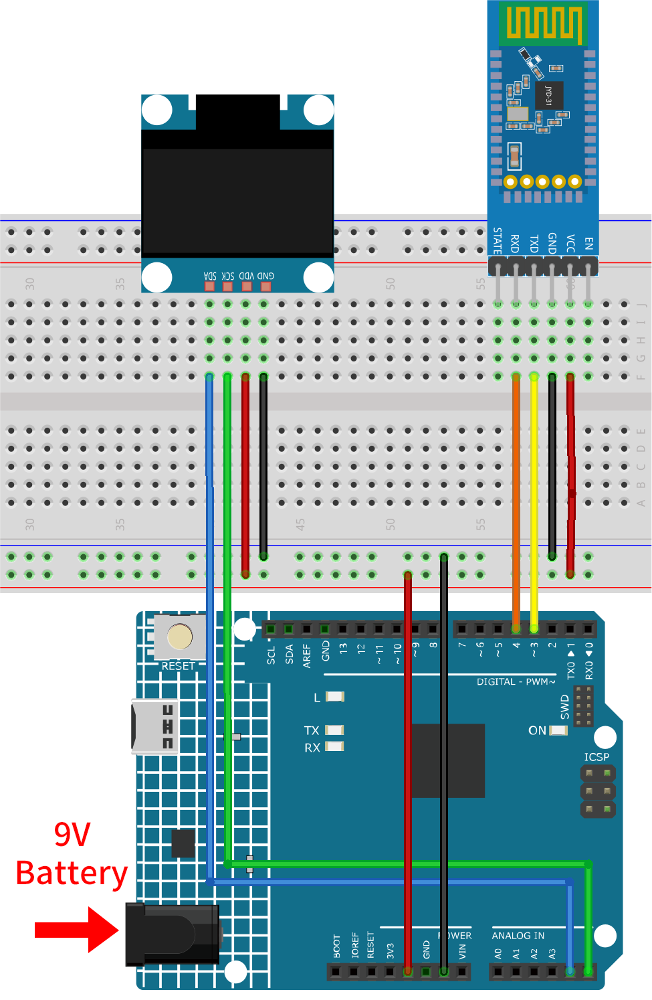
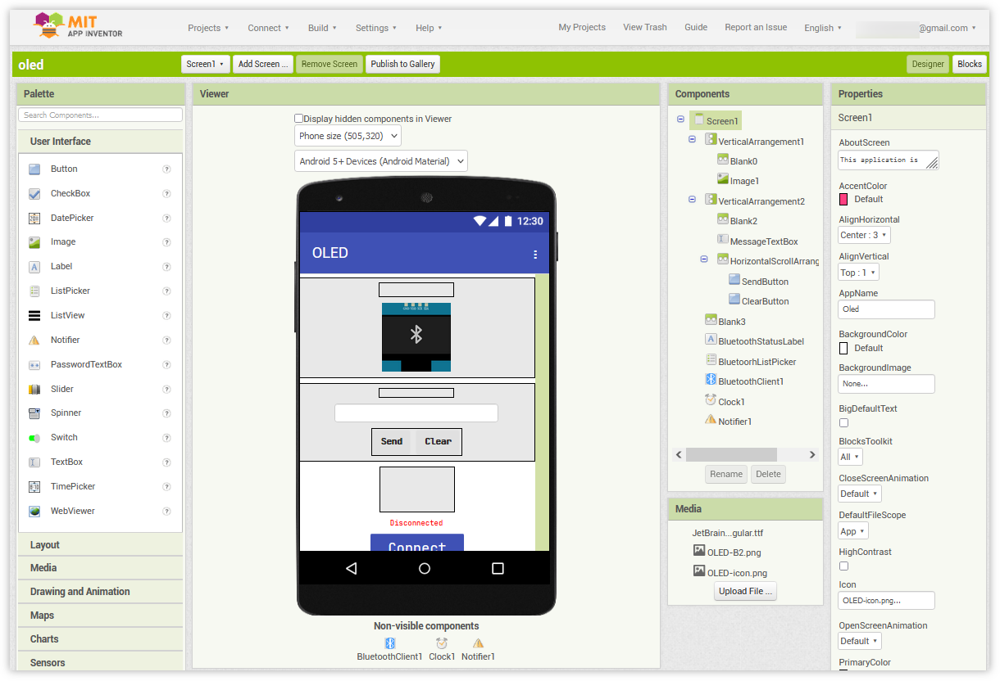
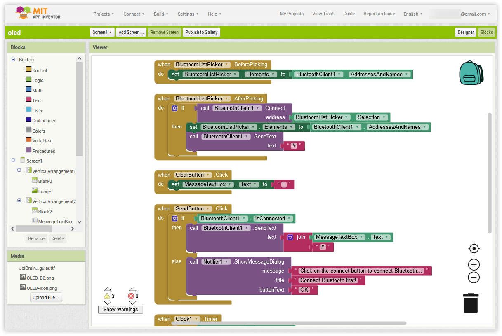
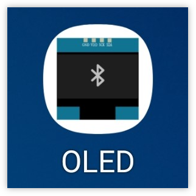
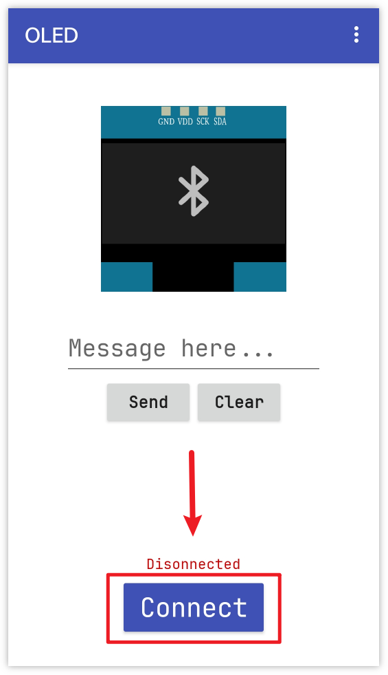
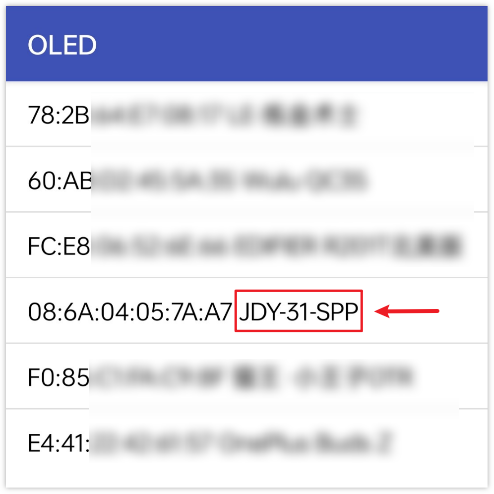
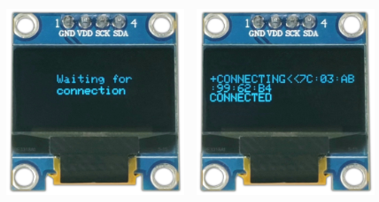
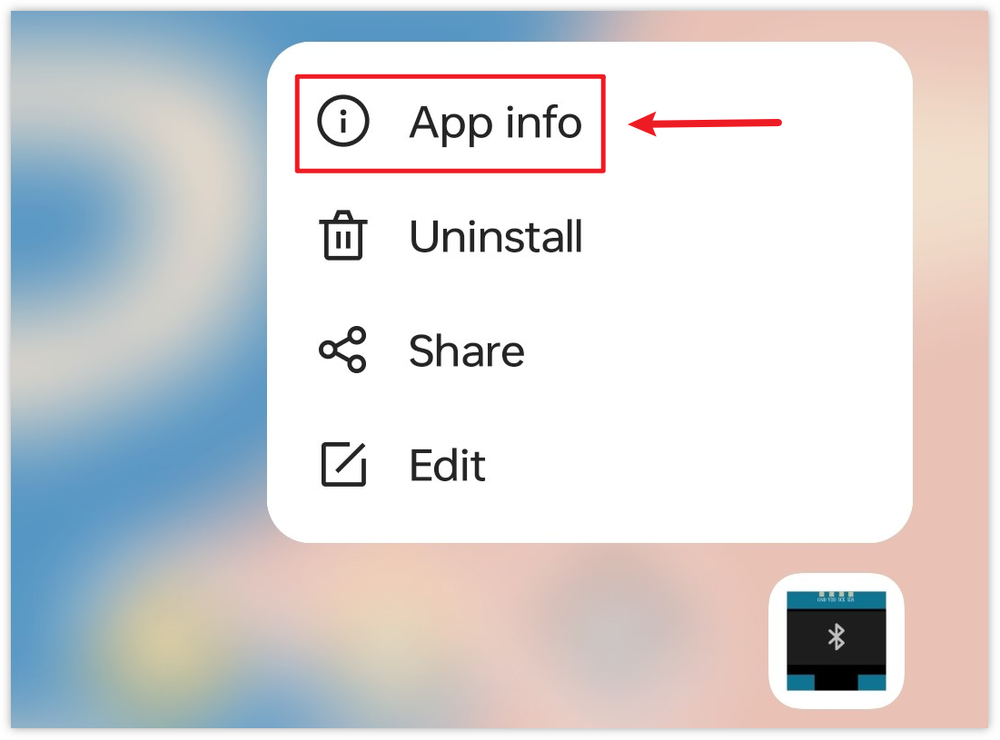
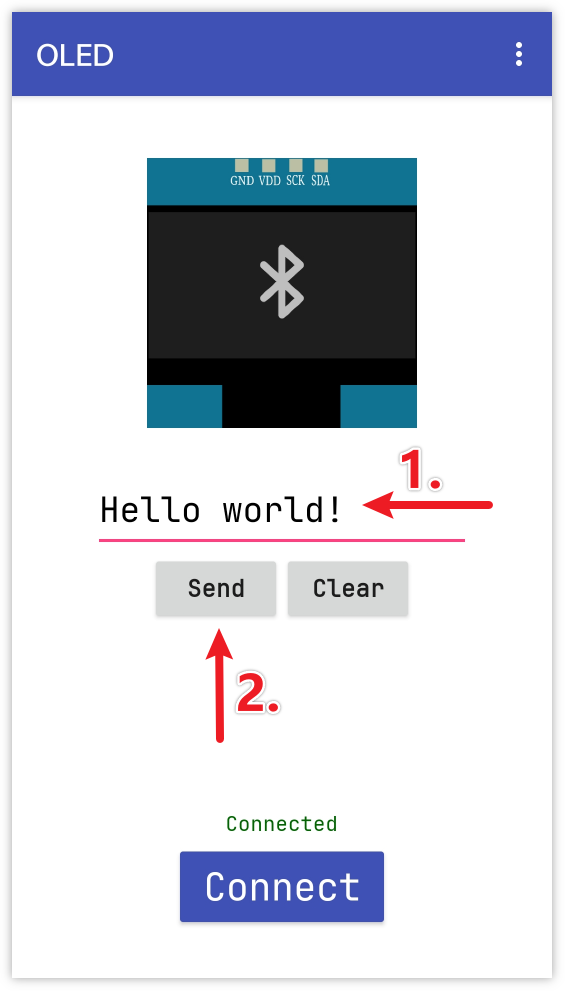

Bemerkung
Hallo und willkommen in der SunFounder Raspberry Pi & Arduino & ESP32 Enthusiasten-Gemeinschaft auf Facebook! Tauchen Sie tiefer ein in die Welt von Raspberry Pi, Arduino und ESP32 mit anderen Enthusiasten.
Warum beitreten?
Expertenunterstützung: Lösen Sie Nachverkaufsprobleme und technische Herausforderungen mit Hilfe unserer Gemeinschaft und unseres Teams.
Lernen & Teilen: Tauschen Sie Tipps und Anleitungen aus, um Ihre Fähigkeiten zu verbessern.
Exklusive Vorschauen: Erhalten Sie frühzeitigen Zugang zu neuen Produktankündigungen und exklusiven Einblicken.
Spezialrabatte: Genießen Sie exklusive Rabatte auf unsere neuesten Produkte.
Festliche Aktionen und Gewinnspiele: Nehmen Sie an Gewinnspielen und Feiertagsaktionen teil.
👉 Sind Sie bereit, mit uns zu erkunden und zu erschaffen? Klicken Sie auf [hier] und treten Sie heute bei!
Bluetooth OLED
Dieses Projekt nutzt eine mit dem MIT App Inventor erstellte Android-App, um Nachrichten via Bluetooth an ein Arduino-Gerät zu senden. Der Arduino zeigt die empfangenen Nachrichten auf einem OLED-Bildschirm an. Die Android-App punktet mit einer benutzerfreundlichen Oberfläche und ermöglicht es, Nachrichten einzugeben und per Knopfdruck zu senden.
Die Android-Anwendung wird mit einer kostenlosen, webbasierten Plattform namens MIT App Inventor erstellt. Das Projekt bietet eine hervorragende Gelegenheit, die Kommunikation zwischen einem Arduino und einem Smartphone näher kennenzulernen.
1. Schaltung aufbauen


2. Android-App erstellen
Für die Entwicklung der Android-Anwendung wird eine kostenlose Webanwendung namens MIT App Inventor verwendet. MIT App Inventor bietet dank seiner intuitiven Drag-and-Drop-Funktionen einen ausgezeichneten Einstieg in die Android-Entwicklung.
Jetzt kann es losgehen.
Besuchen Sie Get Started with MIT App Inventor und klicken Sie auf „Online-Tool“ zum Anmelden. Sie benötigen ein Google-Konto zur Registrierung bei MIT App Inventor.

Nach dem Login navigieren Sie zu Projects -> Import project (.aia) from my computer. Laden Sie anschließend die
oled.aia-Datei hoch, die sich im Pfadultimate-sensor-kit\iot_project\bluetooth\07-Bluetooth_oledbefindet.Direkter Download hier möglich:
oled.aia
Nach dem Hochladen der
.aia-Datei erscheint die Anwendung in der MIT App Inventor-Software. Dies ist eine vorkonfigurierte Vorlage. Sie können diese Vorlage modifizieren, nachdem Sie sich mit den folgenden Schritten vertraut gemacht haben.In MIT App Inventor gibt es zwei Hauptbereiche: den Designer und die Blocks. Sie können oben rechts auf der Seite zwischen diesen beiden Bereichen wechseln.

Der Designer ermöglicht es Ihnen, Schaltflächen, Text, Bildschirme hinzuzufügen und das allgemeine Erscheinungsbild Ihrer Anwendung anzupassen.

Dann gibt es den Bereich Blocks. Hier können Sie individuelle Funktionen für Ihre App programmieren und so jede Komponente in der App-Oberfläche nach Ihren Wünschen gestalten.

Um die Anwendung auf einem Smartphone zu installieren, navigieren Sie zur Registerkarte Build.

Sie können eine
.apk-Datei generieren. Nachdem Sie diese Option ausgewählt haben, erscheint eine Seite, auf der Sie zwischen dem Herunterladen einer.apk-Datei oder dem Scannen eines QR-Codes für die Installation wählen können. Befolgen Sie die Installationsanleitung, um die Installation der Anwendung abzuschließen.Sie können auch unsere vorkompilierte APK hier herunterladen:
piano.apkWenn Sie die App im Google Play Store oder einem anderen App-Marktplatz veröffentlichen möchten, können Sie eine
.aab-Datei generieren.
3. Code hochladen
Öffnen Sie die Datei
07-Bluetooth_oled.inoim Pfadultimate-sensor-kit\iot_project\bluetooth\07-Bluetooth_oled, oder kopieren Sie diesen Code in die Arduino IDE.Bemerkung
Um die Bibliothek zu installieren, verwenden Sie den Arduino-Bibliotheksmanager und suchen nach „Adafruit SSD1306“ und „Adafruit GFX“ und installieren diese.
Nach der Auswahl des richtigen Boards und Ports klicken Sie auf die Schaltfläche Hochladen.
Öffnen Sie den Seriellen Monitor (Baudrate auf 9600 einstellen), um Debug-Nachrichten anzuzeigen.
4. Verbindung der App mit dem Bluetooth-Modul
Vergewissern Sie sich, dass die zuvor erstellte App auf Ihrem Smartphone installiert ist.
Aktivieren Sie zu Beginn die Bluetooth-Funktion Ihres Smartphones.

Navigieren Sie zu den Bluetooth-Einstellungen auf Ihrem Smartphone und suchen Sie nach Namen wie JDY-31-SPP.

Nachdem Sie darauf geklickt haben, stimmen Sie der Pairing-Anfrage im Popup-Fenster zu. Sollte ein Pairing-Code erforderlich sein, geben Sie „1234“ ein.

Öffnen Sie nun die frisch installierte OLED-App.

In der App tippen Sie auf die Connect-Schaltfläche, um eine Verbindung zwischen der App und dem Bluetooth-Modul herzustellen.

Diese Seite listet alle bereits gekoppelten Bluetooth-Geräte auf. Wählen Sie die Option
xx.xx.xx.xx.xx.xx JDY-31-SPPaus der Liste aus. Der Name jedes Geräts ist neben seiner MAC-Adresse aufgeführt.
Nach erfolgreicher Verbindung wechselt das OLED-Display von „Waiting for connection“ zur Anzeige der MAC-Adresse des verbundenen Geräts.

Sollten Sie auf der angezeigten Seite keine Geräte sehen, könnte es daran liegen, dass die App nicht berechtigt ist, in der Nähe befindliche Geräte zu scannen. In einem solchen Fall müssen Sie die Einstellungen manuell anpassen.
Um die App-Info-Seite zu öffnen, halten Sie das App-Symbol lange gedrückt und wählen Sie es aus. Falls Sie einen alternativen Weg kennen, diese Seite zu erreichen, nutzen Sie diesen.

Navigieren Sie zur Berechtigungen-Seite.

Um der App das Scannen von Geräten in der Nähe zu ermöglichen, gehen Sie zu Nahegelegene Geräte und wählen Sie Immer.

Starten Sie anschließend die App neu und wiederholen Sie die Schritte 5 und 6, um eine erfolgreiche Bluetooth-Verbindung herzustellen.
Nach erfolgreicher Verbindung werden Sie zur Hauptseite weitergeleitet. Tragen Sie Ihre gewünschte Nachricht in das vorgesehene Textfeld ein und betätigen Sie die Sendetaste, um sie auf dem OLED-Display darzustellen.



5. Code-Erklärung
Einrichtung der Bluetooth-Kommunikation:
In diesem Abschnitt wird die
SoftwareSerial-Bibliothek eingebunden und die digitalen Pins für die Bluetooth-Kommunikation konfiguriert. Die Standard-Serial-Schnittstelle dient zur Fehlersuche, währendbleSerialspeziell für die Bluetooth-Kommunikation vorgesehen ist.#include <SoftwareSerial.h> const int bluetoothTx = 3; const int bluetoothRx = 4; SoftwareSerial bleSerial(bluetoothTx, bluetoothRx);
Einrichtung des OLED-Displays:
Hier werden die benötigten Bibliotheken und Konstanten zur Initialisierung und Verwaltung des OLED-Displays deklariert.
#include <SPI.h> #include <Wire.h> #include <Adafruit_GFX.h> #include <Adafruit_SSD1306.h> #define SCREEN_WIDTH 128 #define SCREEN_HEIGHT 64 #define OLED_RESET -1 #define SCREEN_ADDRESS 0x3C Adafruit_SSD1306 display(SCREEN_WIDTH, SCREEN_HEIGHT, &Wire, OLED_RESET);
Initialisierung:
In der Funktion
setup()werden die seriellen Kommunikationswege initialisiert. Das OLED-Display wird gestartet, und die Anfangsmeldung „Waiting for connection“ wird angezeigt.void setup() { Serial.begin(9600); bleSerial.begin(9600); if (!display.begin(SSD1306_SWITCHCAPVCC, SCREEN_ADDRESS)) { Serial.println(F("SSD1306 allocation failed")); for (;;) ; } display.clearDisplay(); display.setTextColor(WHITE); display.setTextSize(1); display.setCursor(32, 20); display.println("Waiting for"); display.setCursor(32, 30); display.println("connection"); display.display(); }
Hauptschleife:
Innerhalb der
loop()-Funktion prüft der Code ständig auf eingehende Daten vom Bluetooth-Modul. Sobald eine vollständige Nachricht (die mit einem ‚#‘ endet, fügt die App automatisch ein ‚#‘ am Ende der vom Benutzer gesendeten Nachricht hinzu) empfangen wird, wird diese auf dem OLED angezeigt. Zudem wird die empfangene Nachricht zur Fehlersuche im seriellen Monitor ausgegeben.void loop() { while (bleSerial.available() > 0) { character = bleSerial.read(); message = message + character; if (character == '#') { message = message.substring(0, message.length() - 1); Serial.println(); Serial.print("DEBUG:"); Serial.println(message); display.clearDisplay(); display.setTextColor(WHITE); display.setTextSize(1); display.setCursor(0, 20); display.println(message); display.display(); message = ""; delay(200); } } }